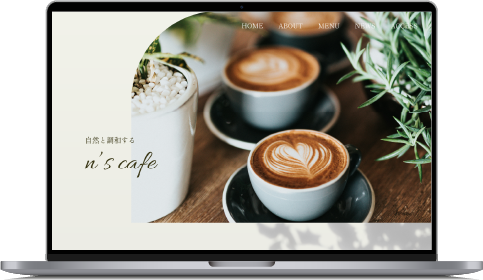

<!DOCTYPE html>
<html lang="en">

<head>
    <meta charset="UTF-8">
    <meta name="viewport" content="width=device-width, initial-scale=1.0">
    <title>Document</title>

    <script src="https://cdn.jsdelivr.net/npm/gsap@3.12.5/dist/gsap.min.js"></script>

    <script src="https://cdn.jsdelivr.net/npm/gsap@3.12.5/dist/ScrollTrigger.min.js"></script>


    <style>
        .box-02 {
            height: 100%;
            display: flex;
            justify-content: center;
            align-items: center;
            /* width: 6000px; */
            background-color: rgb(255, 133, 133);
        }

        .slides-wrapper {
            /* GSAP前、width指定必要 */
            /* width: calc(100% - 50px); */
            width: 10000px;
            height: 100vh;
            display: flex;
            /* justify-content: center; */
            align-items: center;
            gap: 100px;
            background-color: cadetblue;
            margin: 0 auto;
            overflow: hidden;
        }


        .sp-ttl {
            width: 700px;
            height: 400px;
            /* background-color: brown; */
            /* display: flex; */
            /* align-items: center; */
            /* justify-content: center; */
        }

        .list-left {
            width: 2000px;
            height: 400px;
            /* background-color: royalblue; */
            /* display: flex; */
            /* align-items: center; */
            /* justify-content: center; */

        }

        .list-right {
            width: 3000px;
            height: 400px;
            /* background-color: blueviolet; */
            /* display: flex; */
            /* align-items: center; */
            /* justify-content: center; */

        }

        .h400 {
            width: 700px;
            height: 400px;
            background-color: rgb(255, 255, 255);
        }

        .box-3 {
            height: 2000px;
            background-color: chocolate;
        }

        /* 1 */

        .ttl {
            height: 32px;
            border-left: 5px solid #f2917e;
            display: flex;
            justify-content: space-between;
            margin-left: 57px;
            margin-bottom: 20px;
        }

        h1 {
            font-size: 18px;
            margin-left: 10px;
        }

        .ttl p {
            font-size: 16px;
            letter-spacing: 0.2em;
            line-height: 2;
            text-align: center;
            width: 91px;
            height: 32px;
            border: 1px solid #423732;
            border-radius: 16px;
        }

        .img {
            position: relative;
        }

        .img_pc {
            height: 348px;
        }

        .img_pc img {
            height: 100%;
        }
    </style>

</head>

<body>

    <div class="box-2">
        <div class="slides-wrapper">
            <!-- 1 -->
            <div class="sp-ttl slide">
                <div class="h400">
                    <!-- <div class="ttl">
                        <h1>カフェサイト（架空）</h1>
                        <p>HP</p>
                    </div>
                    <div class="img">
                        <div class="img_pc"> 
                        </div>
                    </div> -->
                </div>
            </div>
            <!-- 2 -->
            <div class="list-left slide">
                <div class="h400 box">
                    <!-- <div class="contents wrapper bottom-txt">
                        <div class="sp_ttl">
                            <h1>カフェサイト（架空）</h1>
                        </div>
                        <div class="list_left">
                            <div class="list_row">
                                <ul>
                                    <li class="list_ttl">制作期間</li>
                                    <li class="list_txt">２日</li>
                                </ul>
                            </div>
                            <div class="list_row">
                                <ul>
                                    <li class="list_ttl">担当範囲</li>
                                    <li class="list_txt">Webデザイン、コーディング（HTML・CSS）</li>
                                </ul>
                            </div>
                            <div class="list_row">
                                <ul>
                                    <li class="list_ttl">使用ツール</li>
                                    <li class="list_txt">Adobe Illustrator・Adobe photoshop</li>
                                </ul>
                            </div>
                            <div class="list_row">
                                <ul>
                                    <li class="list_ttl">ターゲット</li>
                                    <li class="list_txt">50〜60代の女性</li>
                                </ul>
                            </div>
                            <div class="list_row">
                                <ul>
                                    <li class="list_ttl">コンセプト</li>
                                    <li class="list_txt">ナチュラル、おしゃれ</li>
                                </ul>
                            </div>
                            <div class="list_row">
                                <ul>
                                    <li class="list_ttl">目的・課題</li>
                                    <li class="list_txt">ー</li>
                                </ul>
                            </div>
                        </div>
                        <div class="point">
                            <h2>制作ポイント</h2>
                            <p>訴求ポイントは「簡単」に作ることができるところ。<br>
                                「簡単」というだけでは消費者に正しく伝わらないため、具体的に「水・肉・トマト缶だけ」という文言を目立たせ、パッと見ただけでもイメージが湧きやすいように料理画像も併用した。
                                <br><br>
                                またターゲット層に合わせて、最低限の文字数とし、視認性に配慮した。
                            </p>
                            <p>訴求ポイントは「簡単」に作ることができるところ。<br>
                                「簡単」というだけでは消費者に正しく伝わらないため、具体的に「水・肉・トマト缶だけ」という文言を目立たせ、パッと見ただけでもイメージが湧きやすいように料理画像も併用した。
                                <br><br>
                                またターゲット層に合わせて、最低限の文字数とし、視認性に配慮した。
                            </p>
                        </div> -->
                </div>
            </div>
            <!-- </div> -->
            <!-- 3 -->
            <div class="list-right slide">
                <div class="h400"></div>
            </div>
        </div>
    </div>
    <!-- </div> -->
    <div class="box-3"></div>
    <!-- <div class="box-2">
        <div class="slides-wrapper">
            <div class="sp-ttl slide">
                <div class="h400"></div>
            </div>
            <div class="list-left slide">
                <div class="h400"></div>
            </div>
            <div class="list-right slide">
                <div class="h400"></div>
            </div>
        </div>
    </div>
    <div class="box-3"></div> -->


    <script>

        const wrapper = document.querySelector('.slides-wrapper');
        if (wrapper) {
            // gsap.registerPlugin(ScrollTrigger); // npm/yarnの際に必要
            const slides = gsap.utils.toArray('.slide');
            const wrapperWidth = wrapper.offsetWidth;
            const wrapperHeight = wrapper.offsetHeight;
            // const windowWidth = window.innerWidth;
            // const scrollWidthHorizontal = wrapperWidth - windowWidth
            /**
            * 横スクロール開始
            */
            gsap.to(slides, {
                xPercent: -100 * (slides.length - 1), // transformX
                ease: "none", // easingの設定
                scrollTrigger: { // scrollTrigger
                    trigger: wrapper, // アニメーションの対象となる要素
                    pin: true, // 要素を固定する
                    scrub: 1, // スクロールとアニメーションを同期させる。数値で秒数の設定に
                    markers: true,
                    // snap: { // スナップスクロールにする
                    //     snapTo: 1 / (slides.length - 1), // スナップで移動させる位置
                    //     duration: { min: .4, max: .6 }, // スナップで移動する際の遅延時間
                    //     ease: "none" // easing
                    // },
                    top: 'top center',
                    // end: () => 600, // アニメーションの終了タイミング
                    // end: 'right right',
                    // end: () => "+=" + wrapperHeight,// アニメーションの終了タイミング
                    end: () => "+=" + wrapperWidth,// アニメーションの終了タイミング
                    // end: () => "+=" + scrollWidthHorizontal // アニメーションの終了タイミング
                    anticipatePin: 1,
                    invalidateOnRefresh: true,

                }
            })
        }


        // // scrub スクロール量に応じたアニメーション
        // gsap.to('.box-1', {
        //     x: 600,//右方向に600動く
        //     scrollTrigger: {
        //         trigger: '.box-1',
        //         start: 'top top', // 開始する位置、要素の上端が画面の上端に来た時
        //         // end: () => "+=" + wrapperWidth, // アニメーションの終了タイミング
        //         end: 'bottom center',　// 終了する位置
        //         scrub: true, // スクロール量に応じてアニメーション
        //         markers: true,
        //     }
        // });

    </script>

</body>

</html>